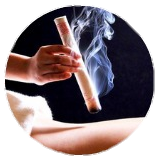

Agulhamento
Técnica que equlibra e harmoniza a energia interna do organusmo com as energias do ambiente, por isso, a utilização da acuputura é benéfica para tratar dores e doenças.
Ventosaterapia
Técnica que equlibra e harmoniza a energia interna do organusmo com as energias do ambiente, por isso, a utilização da acuputura é benéfica para tratar dores e doenças.

MoxaBustão
Técnica que utiliza o calor, induzindo ao relaxamento, diminuição da rigidez muscular e provando um aumento local da circulação sanguínea, causando efeitos positivos no sistema imunológico.